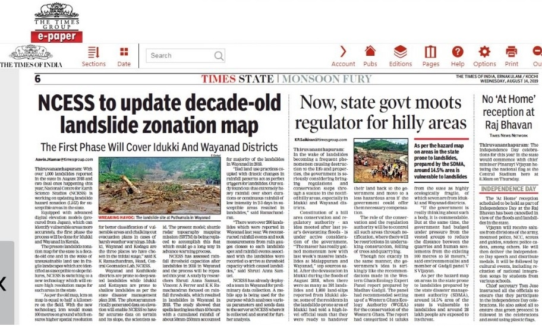

Education
- M.Sc Integrated (5 years) Applied Geology - Pondicherry University (Puducherry, India)
- Post Graduate Diploma in Remote Sensing and GIS in Geosciences - Indian Institute of Remote Sensing (Dehradun, India)
My Interests
Last Surface Temperature (LST) retrieval and LST based thermal anomaly detection using multispectral TIR data
Post graduate Diploma Project
Abstract
The infamous Gondwana coal fields of Jharia has been burning for decades. The fire consuming the coal has been propogating owing to the unscientific mining methods. Due to the dynamic nature of the coal fire from time to time, it seeks attention at a detailed level.
The project was focused on efficient Land Surface Temperature (LST) retrieval from ASTER TIR night time dataset for the years 2016 and 2015 and thermal anomaly detection so as to map the current scenario of coal fire existing in the area. Three main parameters namely radiant temperature, emissivity, and transmittance were calculated to find the LST using split window method. Emissivity was calculated via a hybrid NDVI thresholding method while transmittance was calculated using a three channel water vapour product of atmospheric absorption bands to the atmospheric window bands. The thermally anomalous regions were narrowed down by using profile based statistical algorithm. The thermal anomalies conform with the coal fire locations as validated from previous field data.
Morphometric Analysis using Remote Sensing and GIS techniques to study the Neotectonic activity: A case study from Indravati River Basin
Post graduate Project
Abstract
Satellite imagery and digital elevation models (DEM) help us to identify and assess regional features as well as provide qualitative and quantitative insights about landscape evolution. The case study was focused to find evidences of neotectonism in the Indravati basin from geomorphic indices.
Landsat 8 OLI(Operational Land Imager) data and SRTM (Shuttle Radar Topography Mission) DEM was used to delineate the basin and identify the markers of possible neotectonic activity in the region. Geomorphic indices like hypsometric integral (HI), stream gradient index (SL), basin elongation ratio (RI), basin asymmetry ratio (Ba), basin circulatory ratio (Re), bifurcation ratio (Bf), and drainage density (Dd) were studied to support the visible expressions of tectonically influenced drainage patterns. Additionally, lineaments derived from multispectral data helped understand their influence on the drainage.
Landslide Susceptibility Modelling
At NCESS, I was part of the Central geomatics lab that carried out research which focused on applications of Remote Sensing and GIS in understanding slope failures. Some of the findings has been featured in newspapers like the Times of India and as a conference paper in the National Geo-Research Scholars Meet (2018).
Western ghats has been prone to landslides but has gained popular attention in the past couple of years. The extreme rainfall events during 2018 and 2019 has led to devasting slope failures and the loss of precious lives. Therefore research in landslide mapping, monitoring and forecast is tatamount to managing such disasters in the future.
